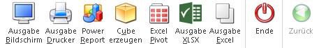
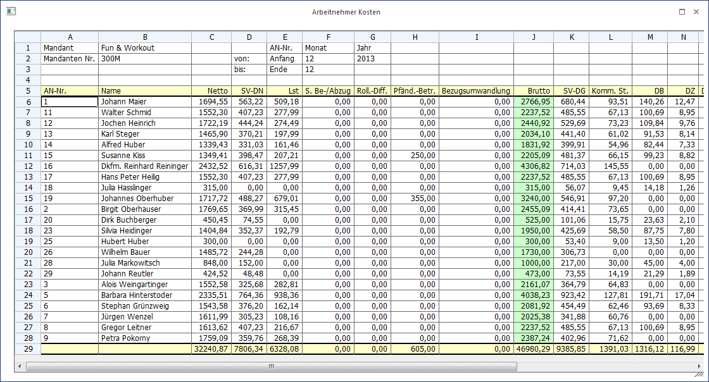
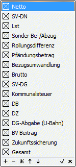
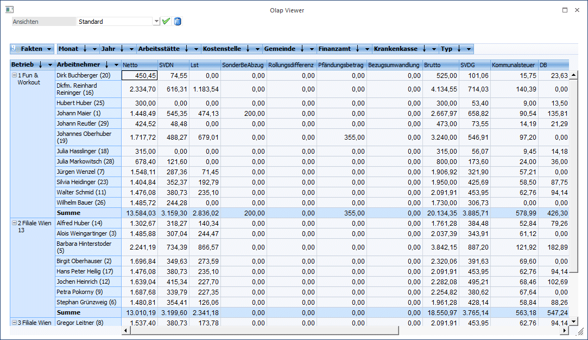

Über den Menüpunkt
1 Auswertungen
1 Arbeitnehmer Kosten
kann eine Liste der AN und ihre Kosten ausgegeben werden. Dabei können folgende Einstellungen vorgenommen werden:
Ø Arbeitnehmer von - bis
Einschränkung der AN, die ausgewertet werden sollen. Wie die AN-Nummer eingegeben werden kann, dazu gibt es mehrere Möglichkeiten. Details dazu entnehmen Sie bitte dem Kapitel Aufruf einer AN-Nummer. Wird in den Feldern von - bis ein AN eingetragen, so wird daneben der Name des AN angezeigt, wobei der Name unterstrichen dargestellt wird. Durch einen Klick auf den AN wird standardmäßig der AN-Stamm aufgerufen. Über die rechte Maustaste kann aber individuell eingestellt werden, welche Aktion ausgelöst werden soll. Dabei stehen folgende Optionen zur Verfügung:

ü Arbeitnehmerstamm
Es wird der
AN-Stamm aufgerufen, wobei gleich der Datensatz des angezeigten AN angezeigt
wird.
ü Arbeitnehmerinfo
Es wird die
Arbeitnehmerinfo im Programm WinLine INFO geöffnet.
ü Jahreslohnkonto
Es wird das
Steuerfenster für das Jahreslohnkonto aufgerufen, wo der ausgewählte AN gleich
vorgeschlagen wird. Die Ausgabe muss nur mehr durchgeführt werden.
ü Arbeitnehmer Stammblatt
Es wird
das Steuerfenster für das Arbeitnehmer Stammblatt aufgerufen, wo der ausgewählte
AN gleich vorgeschlagen wird. Die Ausgabe muss nur mehr durchgeführt werden.
ü Lohnerfassung A
Es wird die
Einzelabrechnung aufgerufen, wobei gleich alle Daten des ausgewählten AN
abgerufen werden. Bei diesen Punkt ist darauf zu achten, dass ggf. die
automatischen Lohnarten abgearbeitet werden.
Die zuletzt getätigte Einstellung wird als Standard übernommen, d.h. wenn das nächste Mal nur auf den AN-Namen geklickt wird, dann wird die letzte Aktion automatisch durchgeführt. Diese Einstellung wird pro Benutzer gespeichert.
Periode
Ø Jahr von-bis
Aus der Auswahllistbox kann das Jahr (die Jahre) gewählt werden, für das die Auswertung durchgeführt werden soll. Dabei stehen alle Jahre zur Verfügung, für die Abrechnungen gespeichert sind.
Ø Periode von - bis
Aus den Auswahllistboxen kann das Monat (die Monate) ausgewählt werden, für das die Auswertung durchgeführt werden soll. Es stehen alle Perioden zur Verfügung, in denen es Abrechnungen gibt (dies gilt auch für eventl. vorhandene zukünftige Abrechnungsperioden, in den bereits Ersatzleistungen abgerechnet wurden).
Zusätzlich dazu können über den Filter-Button weitere, frei definierbare Selektionen vorgenommen werden, wobei z.B. auch die Sortierung der Ausgabe bestimmt werden kann.
Ø Jahresvergleich
Wird die Option Jahresvergleich aktiviert und betrifft die Selektion mehrere Wirtschaftsjahre, wird pro Wirtschaftsjahr und AN eine eigene Zeile ausgegeben. Wird die Option nicht gesetzt, werden die Werte kumuliert.
Buttons

Ø Ausgabe Bildschirm
Mit Hilfe des Buttons "Ausgabe Bildschirm" oder der Taste F5 wird die Auswertung am Bildschirm ausgegeben.
Ø Ausgabe Drucker
Durch Anwahl des Buttons "Ausgabe Drucker" wird die Auswertung am Drucker ausgegeben.
Ø Power Report
Durch Drücken des Buttons "Power Report" wird die Auswertung auf Basis von Cube-Daten grafisch dargestellt. Die Ausgabe ist individuell anpassbar und erfolgt in der Form von "Widgets", die unterschiedlichsten Darstellungen ermöglichen.
Ø Cube erzeugen
Wenn die Option "Cube erzeugen" gewählt wird (nur möglich, wenn auch die entsprechende Lizenz dafür vorhanden ist), dann werden die Arbeitnehmer Kosten im "Olap Viewer" angezeigt. In diesem können die Daten nach verschiedenen Gesichtspunkten ausgewertet werden. In der Auswertung werden folgende Daten (Fakten) angezeigt:
ü Arbeitnehmer
ü Monat
ü Jahr
ü Betrieb
ü Kostenstelle
ü Arbeitsstätte
ü Gemeinde
ü Finanzamt
ü Krankenkasse
ü Typ
Dazu gibt es noch die Measures, nach denen die Auswertung "betrachtet" werden kann. Die Measures sind:
ü Netto
ü SVDN
ü Lst
ü SonderBeAbzug
ü Rollungsdifferenz
ü Bezugsumwandlung
ü Brutto
ü SVDG
ü Kommunalsteuer
ü DB
ü DZ
ü DGAbgabe(Ubahn)
ü BVBeitrag
ü Zukungssicherung
ü Gesamt
Ø Excel Pivot
Durch Anwahl des Buttons "Excel Pivot" werden die selektierten Zeilen in Form einer Pivot Ausgabe in Microsoft Excel (2007 oder höher) angezeigt.
Ø Ausgabe XLSX
Mit Hilfe des Buttons "Ausgabe XLSX" wird die Auswertung mit den von Ihnen definierten Selektionen an Microsoft Excel übergeben.
Ø Ausgabe Excel
Mit dieser Ausgabeoption wird die Auswertung an die Programminterne Excel Tabelle übergeben.
Ø Ende
Durch Drücken des Buttons "Ende" bzw. der Taste ESC wird das Fenster geschlossen.
Ø Zurück
Der Button "Zurück" kann nur angewählt werden wenn zuvor die Ausgabe an die interne Excelliste (Ausgabe Excel) übergeben worden ist, um zurück zum Hauptfenster zu kommen.
Auf der Liste sind folgende Informationen ersichtlich:
Ø AN-Nr.
Ø Name
Ø Netto
Ø SV-DN
Ø LSt
Ø Brutto
Ø SV-DG
Ø Komm.St.
Ø DB
Ø DZ
Ø U-Bahn
Ø BV-Beitrag
Ø Zuk.Sich (Zukunftssicherung)
Ø Gesamt (Gesamtkosten für den AN)
Bei der Auswertung auf Tabelle werden noch zusätzlich die Werte
Ø S, Be-/Abzug
Ø Roll.-Diff.
Ø Pfänd.,-Betr.
mit angedruckt. Diese Werte werden auf der "normalen" Liste wegen Platzmangel nicht mit ausgewertet.
Die Werte der Spalte S, Be-(Abzug) dienen nur zu Informationszwecke, da diese bereits beim Netto berücksichtigt wurden.
Es ist darauf zu achten, dass bei den Werten Komm.St., DB und DZ keine Freibeträge berücksichtigt werden

Erezeugen eines Cubes
Wenn die Option "Ausgabe auf Cube" gewählt wird, dann werden die AN-Kosten im "OLAP-Viewer" angezeigt, wo es dann die Möglichkeit gibt, die Daten nach verschiedenen Gesichtspunkten auszuwerten.
In der Auswertung werden folgende Daten (Fakten) angezeigt:
Ø Netto
Ø SV-DN
Ø LST
Ø Sonder Be-/Abzüge
Ø Rollungsdifferenz
Ø Pfändungsbetrag
Ø Bezugsumwandlung
Ø Brutto
Ø SV-DG
Ø Kommunalsteuer
Ø DB
Ø DZ
Ø DG-Abgabe
Ø BV-Beitrag
Ø Zukunftssicherung
Ø Gesamt
Diese Fakten können auch bei Bedarf ausgeblendet werden. Dazu kann im OLAP-Viewer im Bereich "Fakten" die Auswahllistbox geöffnet werden. Danach wird die Liste aller Datenbereiche angezeigt, die dann entsprechend ausgewählt werden können.

Die Auswahl kann durch Anklicken des OK-Buttons übernommen werden.
Dazu gibt es noch die Dimensions, nach denen die Auswertung auch "betrachtet" werden kann. Die Dimensions sind:
Ø Arbeitnehmer (Name und Nummer)
Ø Monat
Ø Jahr
Ø Betrieb
Ø Kostenstelle (*)
Ø Arbeitsstätte (*)
Ø Gemeinde
Ø Finanzamt
Ø Krankenkasse
Ø Typ (Arbeiter/Angestellter)
(*) Die Dimensions mit dieser Kennzeichnung werden aus dem AN-Stamm geholt, alle anderen Werte stammen aus der Abrechnung und können pro Monat unterschiedlich sein.
Beispiel:
Nachfolgend wird ein Beispiel für die AN-Kosten dargestellt, betrachtet nach Betriebsnummer und AN, mit den Fakten Netto, Brutto und Gesamtkosten:

Bei den Dimensions Arbeitnehmer, Betrieb, Kostenstelle Arbeitsstätte, Gemeinde, Finanzamt und Krankenkasse kann über die rechte Maustaste gesteuert werden, ob nur die Bezeichnung, nur die Nummer oder die Bezeichnung und die Nummer des Datensatzes angezeigt werden soll.

In diesem Beispiel für die Dimensions Arbeitnehmer werden sowohl der Name als auch die Nummer angezeigt (erste Einstellung).